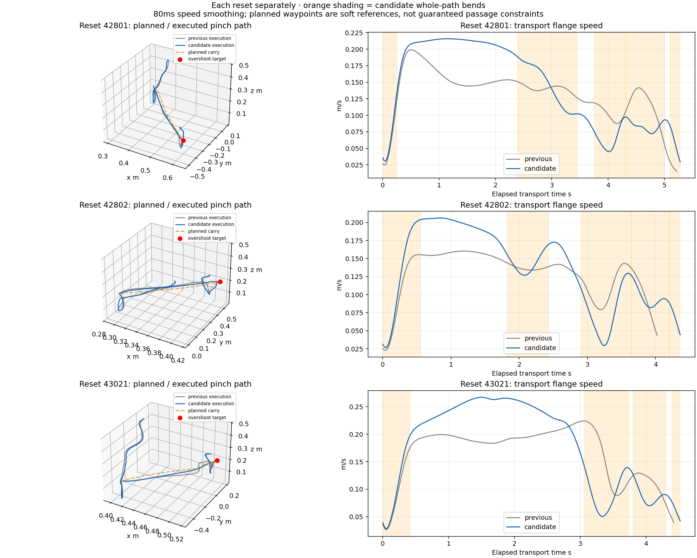
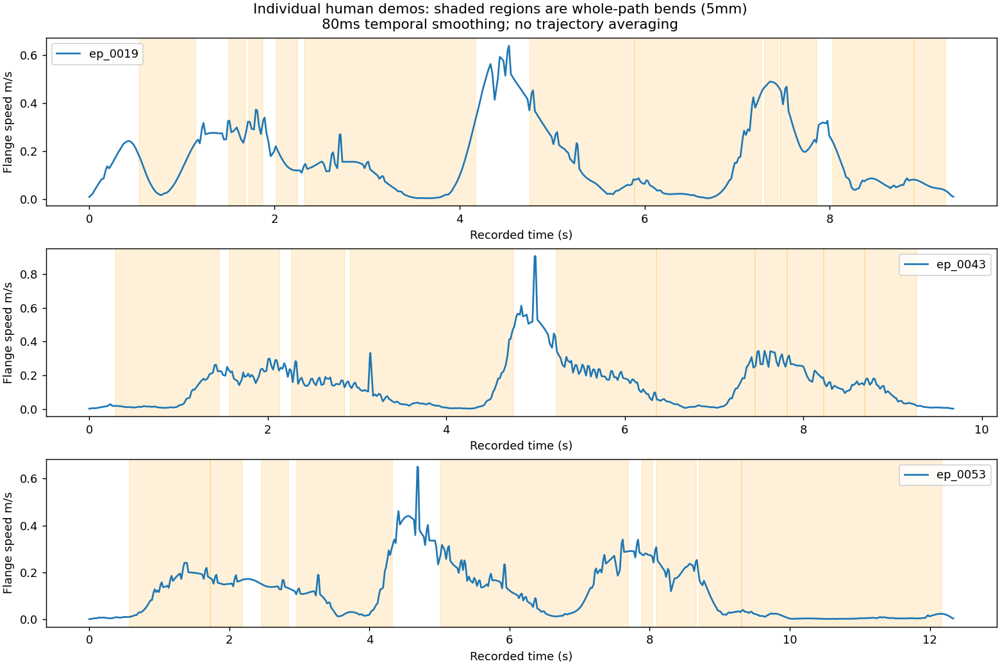

← All motion-comparison galleries
Updated executed examples at 1× real time. All three selected runs passed independent physical replay. Previous faster-version report · Earlier path-shape study
Executed placement overshoot: 3.2cm, from a 5 cm planned target. Bend/between-bend transport speed ratio: 0.42.
Executed placement overshoot: 4.4cm, from a 5 cm planned target. Bend/between-bend transport speed ratio: 0.52.
Executed placement overshoot: 4.7cm, from a 5 cm planned target. Bend/between-bend transport speed ratio: 0.34.
Each reset is plotted separately. Dashed orange: planned carry path; blue: actual candidate; gray: previous execution. Red point: intended overshoot. Orange shading in the speed plots marks detected candidate bends. These compare measured flange speed after 80 ms smoothing; paths show the pinch point used by the controller.

Across the nine annotated left-arm transport phases, speed inside detected bends was lower than between bends in all nine. The median of the per-demo ratios was 0.45. Varying temporal smoothing from 40 to 120 ms gave 0.47–0.41; excluding the first and last 10% of phase time gave about 0.53. Reach and withdrawal were mixed, so this is not a universal rule.
The new simulated carry ratios are 0.34–0.52 versus 0.55–0.87 previously. This is a descriptive comparison: human ring/pole manipulation differs from block stacking, and simulator carry includes alignment. It does not establish a causal human motion model or perceptual naturalness. Human trajectories are never averaged.

All five settings passed physical replay. “Tracking” scales the fabrics response rate by 1.2: potential/stiffness scales by 1.44, damping by 1.2, with corresponding command limits. “Offset” enlarges donor path residuals 35%; it did not materially improve placement overshoot. The selected version combines stronger tracking with a 5 cm placement target.
| Setting | Planned overshoot cm | Executed overshoot cm | Carry waypoint miss p90 cm |
|---|---|---|---|
| nominal | 3.5 | 1.6 | 1.68 |
| tracking | 3.5 | 1.9 | 1.33 |
| offset | 3.5 | 1.6 | 1.68 |
| larger-overshoot | 5.0 | 2.8 | 1.73 |
| selected | 5.0 | 3.2 | 1.41 |
Speed was not constant before: it already depended on curvature, rotation, contact proximity and tracking lag, plus a weak smooth modulation. This revision changes the reference clock, not the execution-energy formulation. TU Delft fabrics also supports runtime damping and dynamic position/velocity/acceleration goals. Damping alone can worsen moving-target lag; geometry-preserving timing theory does not promise exact waypoint tracking under moving attraction and actuator limits.
Source-based research and concrete API options · Official fabrics implementation
Implementation and limitations · Independent physical replay · Reference tests · Video verification
This is a three-reset development check. Collision checks run at 500 Hz; supported, aligned, stationary stacking is required after release and withdrawal for the final second. Earlier sources and Viser apps remain preserved. Policy training remains held.